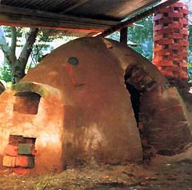
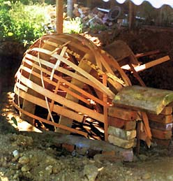
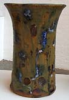
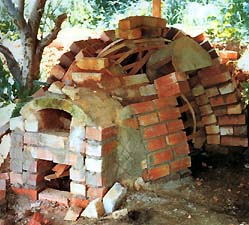

Han
pasado 28 años desde que yo visite el lugar donde Arakawa
Toyozo vivió y trabajo. Como un destinatario de
la beca Fundación Myer Geijutsu., sabia que seguía
los pasos como muchos antes de mí. No fue la primera vez
que experimente el señuelo de Japón: 18 años
antes sobre un vehículo para tropas durante los tiempos
de guerra había desembarcado allí. Pero en ese tiempo
había restricciones en donde cada uno era permitido viajar.
Mia Jima, o la isla Shirne como yo la conocí, fue accesible,
además de dar forma a un hechizo de larga vida, como también
el puerto de Kure fue también interesante con su bastas
construcciones de barcos intactas. Hiro es un pequeño pueblo
cercano donde el tesoro familiar fue vendido durante la ocupación
para facilitar la frugalidad de esos tiempos. Fue allí
donde compre mi primer objeto cerámico, todavía
tengo aquel florero satsuma, así como también he
trazado el origen para encontrar donde fue hecho y si todavía
hay existencia de los mismos. Ellos saben bien cuando el objeto
fue hecho por la calidad del esmalte sobre cubierta esmaltado,
por eso cuando volví nunca pensé que algún
día retornaría al lugar, por mi propio interés
y como alfarero.
Fujio
Koyama hizo la visita de Arakawa posible. No solamente
el hizo los arreglos necesarios sino también suministro
uno de sus aprendices para acompañarme. Al entrar en la
casa de Arakawa tome te por primera vez en una de sus tazas, para
luego escalar la montaña y ver el famoso horno que siguió
la australiana Janet Barriskill sobre el cual luego escribió
un libro. Con la primer mirada fue apenas distinguible el horno
de los escombros que se encontraban en los alrededores, pero eso
me cautivo y jure construir uno como ese, pero nunca pude. Lo
más cercano que estuve fue como lo más lejano de
una respetable relación amorosa, la cual duro unos pocos
años, porque en las afueras de la ciudad donde fue construido
tenía a cientos de metros o más bien cercano el
departamento de bomberos. EL fuego había desbastado la
zona en mas de una ocasión por eso cualquier signo de humo,
olor o fuego era motivo de alarma. Durante el invierno cuando
fue posible hornear sin mayores problemas, la dificultad llego
con la inexplicable presencia de agua drenada de una cercana fuente
que saturaba la chimenea.
Imprudentemente en las primeras etapas de construcción
no cabe profundamente, entonces sobre el cimiento de la chimenea
había agregado un pesado camino de metal y un drenaje de
escombros que incorpore en el plan. La condición húmeda
producía algunos marmolados negros en los objetos cerámicos.
Además fue una lucha llegar a la temperatura usando gas
en vez de leña, por todos estos motivos el horno fue finalmente
demolido pero el sueño de construir otro, un real Arakawa
para la próxima vez persistió.
La
palabra “Anagama”
es actualmente usada para describir distintos tipos de hornos.
Mi horno fue parcialmente enterrado, la mitad trasera fue obstruida
con tierra y escombros, mientras en el frente fue parcialmente
obstruida la entrada, con lo cual fue suficiente para arrastrarse
adentro y afuera del mismo.
No hubo un apropiado plan para levantarlo, sabia
el largo y el ancho de la cámara que quería, luego
desigualmente marque la forma de afuera en la tierra, así
como excave una zanja en el fondo de la hilera de ladrillos. Ello
fue llenado por un grueso agregado de concreto y los ladrillos
fueron colocados en el ángulo de la pared. Había
decidido un arco en la estructura y esto fue determinado por el
Angulo en las paredes. Había realizado cuatro arcos, ellos
estaban hechos de la manera usual, encadenados sobre la pared
que la anchura y la profundidad necesitaban. Debajo de las formas
encadenadas había pedazos de diarios en los cuales había
trazado las curvas de los mismos. La línea marcada fue
transferida a las secciones de madera y los arcos fueron formados
.Cuando los arcos son localizados en su exacta posición,
usted debe colocarlos 5 milímetros por encima o de tal
manera que luego puedan ser removidos de su posición, porque
la forma se reduce luego de la construcción y esto permite
retirar el arco de madera. También pueden atornillarse
las formas juntas para luego retirarse dentro del horno, lo cual
permite un fácil retiro después de finalizada la
construcción.
Tengo un vecino quien es alfarero además
de un habilidoso trabajador en madera. La sección de madera
que el corto para mi fue suficiente para doblar. Estas fueron
puestas sobre los soportes de los arcos y cuando usted encaja
las estructuras de esta manera es sorprendente en lo fuerte que
la estructura se transforma. Luego fue un simple tema decidir
donde la puerta seria puesta, haciendo un arco y poniéndolo
en el lugar. El resto fue una construcción simple de ladrillos,
forrándolo con una mezcla de arcilla, arena y cerveza,
también se uso trozos duros de arcilla para rellenar los
intersticios que dejaban los ladrillos, especialmente en los arcos.
En la parte trasera el horno determino el tamaño de campana
que necesitaba, así como en el frente el de la cámara
de combustión. Como fue utilizada también una hilera
de gas embotellado como combustible inicial y suplementario además
de la leña, por tal motivo no fue necesario un gran compartimiento
de almacenaje. Hornear de esta manera hace posible la tarea menos
ardua, además hubo momentos donde disfrute la ayuda de
algunos voluntarios para la carga del horno. Usando gas también
significaba que en algunas ocasiones podía elegir verdosas
hojas de eucaliptos para obtener algunos maravillosos y coloridos
toques de hidrocarburos y maderas resinosas sin bajar por ello
la temperatura. Puristas piensan y encuentran el uso de ambos
combustibles juntos no del todo autentica, pero nosotros debemos
encontrar la elección justa a nuestras necesidades. Un
buen punto sobre el uso de los dos combustibles juntos es que
la ceniza también se funde sobre los cerámicos,
especialmente cuando esta se agita a la manera de una cama de
cenizas.
La cámara de combustión fue un amor
simple, pero al mismo tiempo fue largo para que en ese pequeño
horno fuera posible hornear con leña según mi deseo.
La cámara de aire fue chequeada antes de permitir que las
llamas entren directamente sobre la carga frontal de piezas. La
salida de combustible en la parte trasera podía ser cerrada
con un ladrillo para acortar la distancia si fuera necesario.
En este horno en particular fue posible el control de la reducción
con el uso de un estante del horno roto, con el cual se cerraba
la chimenea, también en otros hornos que construí
fue posible idear un quemador interior por debajo de ese cerramiento.
Fue posible usando los dos combustibles como uno llevar adelante
la combustión solamente introduciendo maderas verdes.
Hay algunas reglas básicas para seguir en
la construcción de un horno y una que sigo es tratar de
mantener todo lo mas simple posible. Durante mis días de
aprendizaje de horneado a
leña, estuve discutiendo un horno en particular con John
Chappell, durante su fatídico viaje de Japón a Australia.
No encontré posible ir más allá de cierta
temperatura, y fue completamente despareja. El resolvió
el problema en medio minuto y me dio la mejor lección que
pude tener en ese momento. Su consejo fue: evite complicados diseños
y este seguro que la campana tenga cierta altura y la combustión
salga afuera además de que la altura de la chimenea pueda
ser alterada sin una masiva reconstrucción. Fue un buen
consejo. El próximo mejor consejo que recibí fue
sobre el horneado a leña. No sofoque con mucha ceniza,
mantenga su cámara de combustión con leña
y abierta, y trate que siempre halla un delineado de humo saliendo
de la chimenea. De esta manera siempre sabrá su temperatura
y mas afortunadamente la temperatura se elevar y no disminuirá.
Hay otros tipos de cámaras de combustión que más
o menos ahorran trabajo y no hay falta de planes para ellos. Pero
si usted quiere disfrutar y participar con un rudimentario horno,
este es uno pequeño con el cual para mi fue un buen principio
y con el usted podría al mismo tiempo aprender sobre horneado
a leña. Pero pocas cosas en la vida son tan simples como
suenan.

Milton Moon es un artista ceramista
que vive en el sur de Australia, Ha sido un distinguido alfarero
por más d 50 años en su carrera. Articulo cortesía
de Mlilton Moon y Ceramics Art & Perception.